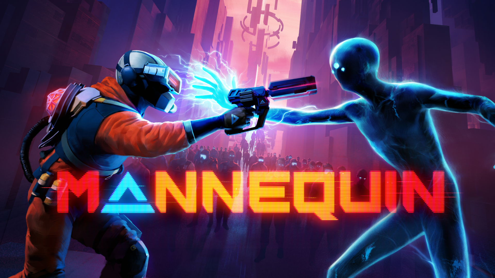
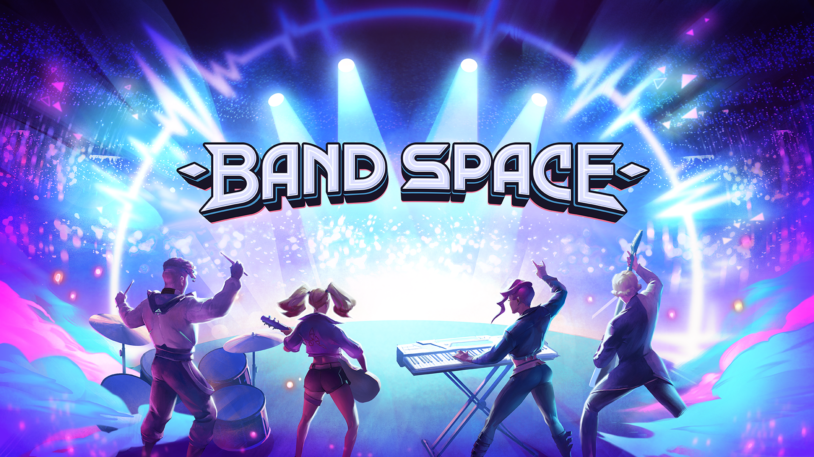
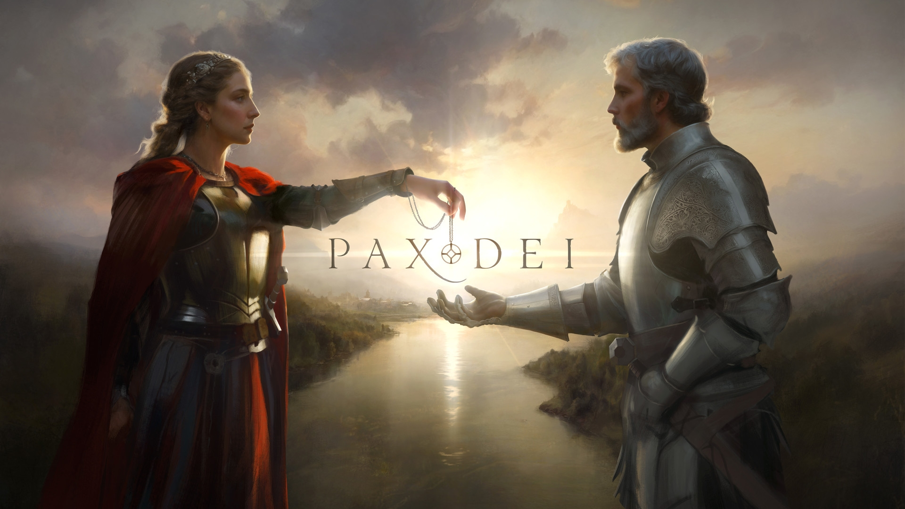

I’m passionate about problem-solving, structured workflows, and making game development smoother. With experience in UX, release- and project management, I enjoy structuring complex processes to ensure clarity and consistency.
With a knack for project management, I streamline complex game releases, coordinating teams and balancing multiple projects to ensure smooth launches and post-release success. Managing multi-platform game launches, store compliance, and go-to-market execution.

Oversaw a multi-platform Early Access to release while Meta was transitioning its App Lab into the main store, dealing with policy shifts and backend inconsistencies.

Managed a full-cycle release across both Meta and Steam, transitioning from free to play to paid, ensuring synchronization of announcements, pre-orders, launch timing, and post-launch updates.
Leveraging strong analytical skills and playtest data to identify player needs, refine experiences, and inform design improvements that enhance gameplay. Project planning and ownership over the research process.
Quantitative and qualitative playtests, leading beta tests and on to early access. from concept to release, with first impression playtest, group playtest, early access survey playtests in a 3vs2 asymmetrical multiplayer game

Lead a team, designed and tested an accessible MMO traversal system for totally blind players